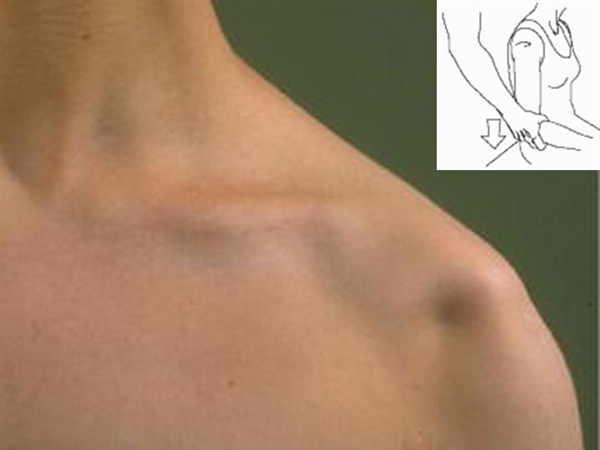
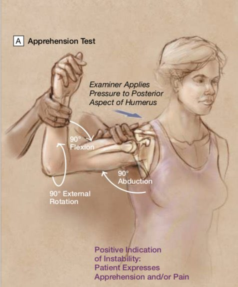

Shoulder Joint
Case Version 1: Shoulder Instability
Your next patient is a 24 year old man who has presented to your General Practice complaining of shoulder problem.
Task:
- Take history
- Physical examination will appear on the screen
- Explain your diagnosis
- Describe the course of disease to the patient ( management not needed)
History findings
- Shoulder keeps falling out/off - very vague complaint
- This time turned sides on bed and go it
- Relocated it by using the door knob
- Previous history of shoulder dislocation
- Cant use his arm as much
- First time happened when he was a footy player, was pushed and had it for the first time
Physical examination findings
- Positive sulcus sign

- Positive apprehension sign

History Taking
3. Opening the Consultation
3.1 Open-Ended Question (Essential)
Because the complaint is vague, strong open-ended questions are mandatory
Example dialogue:
- “Can you tell me more about your shoulder problem?”
- “How can I help you today?”
4. Patient’s Initial Complaint
- Patient uses a vague description:
- “My shoulder keeps falling out”
- “My shoulder keeps falling off”
- “My shoulder keeps falling out”
- Expresses:
- Frustration
- Worry
- Desire to get it checked
- Frustration
5. Empathy & Reassurance
Statement of concern is required
Example dialogue:
- “I understand how concerning and frustrating this must be for you. Let me ask you a few questions, examine you, and we’ll try to find the cause together.”
6. Clarifying the Vague Complaint
6.1 Clarification of Meaning
First priority: Clarify what ‘falling out’ means
Example dialogue:
- “When you say your shoulder is falling out, do you mean it pops out of place?”
- “Do you mean weakness in the arm?”
- “Or difficulty moving your shoulder?”
Purpose: force a clear description
7. Exploring the Main Complaint
7.1 Timing & Course
- Duration:
- “How long have you had this problem?”
- “How long have you had this problem?”
- Pattern:
- On and off vs continuous
- On and off vs continuous
- Progression:
- “Is it getting worse?”
(worse = more frequent)
- “Is it getting worse?”
7.2 Triggers & Relieving Factors
- “Is there anything that makes it better or worse?”
- If no clear answer:
- Ask specifically about movements
- Ask specifically about movements
Example dialogue:
- “Have you noticed any specific movement that triggers your shoulder popping out?”
7.3 Impact on Life
- Functional impact:
- Home
- Work
- Home
Example dialogue:
- “How is this affecting your daily activities at home or at work?”
7.4 Information Gained
From history:
- Shoulder pops out
- Arm can still move
- Reduced ability to use the arm
- Long-standing problem
- Recurrent, on-and-off episodes
8. Shoulder-Specific Symptom Review
8.1 Pain Assessment
- Presence of pain:
- “Do you have pain in the shoulder?”
- “Do you have pain in the shoulder?”
- Site:
- Front / side / back
- Front / side / back
- Characteristics:
- Intensity
- Quality
- Radiation
- Intensity
8.2 Pain Pattern
- Night pain
- Pain worse with activity or after rest
- Morning vs end-of-day pain
8.3 General Musculoskeletal Questions
- Swelling in shoulder
- Redness in shoulder
- Stiffness in shoulder
8.4 Restricted Movement
- “Have you noticed any difficulty or restriction in moving your shoulder?”
- Even if denied:
- Ask about overhead activities
- Ask about overhead activities
Example dialogue:
- “Do you have any difficulty moving your shoulder, especially during overhead activities?”
8.5 Mechanical Symptoms
- Have u noticed any Clicking or Popping sounds from the joints
9. Occupation & Activity History
9.1 Occupation
- Nature of work
- Specifically:
- Overhead activities
- Overhead activities
9.2 Sports & Exercise
- Participation in sports
- High-risk activities:
- Swimming
- Basketball
- Swimming
- Any activity requiring arms above head
10. Previous Injury or Trauma
10.1 Screening Question
- “Have you had any previous injuries or trauma to the shoulder?” - yes
10.2 Exploring the Injury (If Yes)
- When did it happen?
- Mechanism of injury
- Description of event
Patient history revealed:
- Playing footy
- Tackled
- Landed on shoulder
10.3 Medical Attention
- Asked about:
- Scans
- Doctor visits
- Scans
- Patient response:
- No scans
- No doctors
- Improved by itself
- No scans
11. Neurological Screening
Despite shoulder complaint, neurological causes must be excluded
- Numbness or Pins and needles in arms
- Any Weakness in arms
Purpose:
- Rule out nerve injury
- Rule out cervical radiculopathy
12. Arthritis Screening
12.1 Osteoarthritis Consideration
Features asked about:
- Crepitation
- Locking
- Restricted movement
- Deformity
Example dialogue:
- “Have you noticed any deformity in your shoulder?”
12.2 Inflammatory Arthritis Consideration
- Other joint pain
- Other joint problems
- Family history of arthritis
Purpose:
- Identify generalized laxity
- Identify systemic joint disease
13. Summary of History Approach
- Not a differential-based case
- Becomes a specific diagnosis early
- Focused exploration once instability suspected
- Typically unilateral
- Usually one shoulder (e.g. right)
- Usually one shoulder (e.g. right)
14. Physical Examination Findings (Given)
- Positive Apprehension Test
- Positive Sulcus Sign
14.1 Interpretation
- Apprehension test:
- Confirms traumatic anterior instability
- Confirms traumatic anterior instability
- Sulcus sign:
- Indicates inferior instability
- Indicates inferior instability
15. Diagnosis
Preferred terminology:
Shoulder Instability
- Avoid “recurrent shoulder dislocation syndrome”
- Shoulder instability is the accepted term
16. Explaining the Diagnosis to the Patient
16.1 Naming the Condition
Example dialogue:
- “Most likely, you have a condition called shoulder instability.”
16.2 Explaining the Anatomy
- “ the Shoulder joint is kept intact with the help of the Rotator cuff muscles and a tissue called Labrum which keeps the head of your arm bone in place
16.3 Linking to Injury
Example explanation:
- “most likely When you injured your shoulder, you likely tore the muscles and the labrum.”
- “This has led to an unstable joint that can pop out or dislocate more easily.”
16.4 Key Teaching Point
- Shoulder joint is inherently weak structurally
- Stability relies on muscles and labrum
- Damage leads to instability
17. Course of the Disease (As Requested in Exam)
17.1 Nature of Injury
- Muscle tears and labral tears are irreversible
- Depending on the Severity of the tear and the site of the tear, the course can be different.
17.2 Disease Progression
- Course varies depending on:
- Severity of tear
- Site of injury
- Severity of tear
17.3 Explanation Given (Despite Task Limitation)
Although management was not requested, this explanation was unavoidable:
- Imaging (ultrasound or MRI) helps assess severity
- Initial approach is conservative:
- Physiotherapy
- Muscle strengthening
- Physiotherapy
- If it does not help:
- Referral to orthopedic or shoulder surgeon
- Consideration of surgery
- Referral to orthopedic or shoulder surgeon